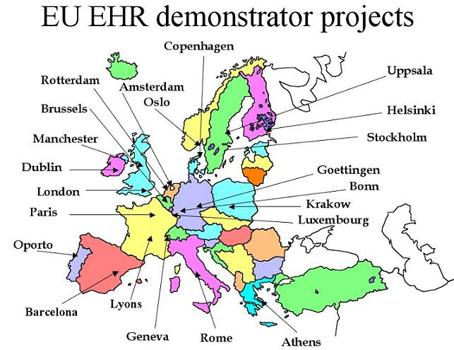

Related Projects
This page provides links to some of the projects which have influenced openEHR, or are in some other way relevant.
GEHR - The Good European Health Record
The GEHR project was an EU 3rd Framework project (Advanced Informatics in Medicine project 2014), and ran from 1992 - 1995. There were 21 participating organisations from 8 countries. The main achievements of the GEHR project were:
- comprehensive requirements of the EHR, which have since fed into many other projects, including ISO 18308;
- a structured object-oriented model of the EHR, which contained basic data types, versioning semantics, and the multi-level structuring now accepted in CEN and HL7 (now known as Folder/Composition/Section/Entry/Cluster/Element; on GEHR it was Transaction/Headed_section/Entry/Compound/Item)
Deliverables
The following is a partial set of the GEHR deliverables.
- Deliverables 4 - Requirements for Clinical Comprehensiveness
- Deliverables 8 - Ethical and Legal Requirements
- Deliverables 19, 20, 24 - The GEHR Archtecture
GEHR Implementers
HealthOne
The flagship product of Health Data Management Partners (HDMP), a Belgian company, is its Healthone clinical data management product, based on the architecture of the original GEHR Project. Healthone is used in a large number of hospitals in Belgium and France, as well as elsewhere in Europe.
Black Sea Telediab
The first successful operational medical record system based on the Good European Health Record (GEHR). The diabetes data is based on the WHO (Europe) Diabcare dataset. This system is written in C++ and uses Microsoft Access as its database.
GeHR in Australia - The Good electronic Health Record
Overview
The GeHR (Australia) project was the precursor to the modern openEHR project. It was undertaken with funding from the (then) Australian Department of Health, and was carried out by Ocean Informatics and DSTC personnel. It built on the experience of the European GEHR project, but radically changed the models and introduced archetypes for the first time. A significant amount of software was built (in Java, Eiffel and VB) which ran exactly according to the published designs. These lessons led to many of the numerous improvements which consistute openEHR today. The development programme of GeHR included as deliverables:
- Clear statement of requirements;
- A description of the architecture;
- Formal expression of the architecture as compilable source code;
- A generated CASE (diagrammatic) expression of the model;
- Various exchange specifications (IDL, XML, etc.);
- An application programming interface (API);
- Provisional set of archetypes;
- Detailed technical documentation; and
- development guidelines.
All of these were made available in the public domain through the efforts of Thomas Beale and Sam Heard. This publication provided the impetus for using GeHR in a series of four trials organised under the auspices of the General Practice Computing Group (GPCG) and funded by the Commonwealth Department of Health and Ageing (DoHA) in Australia.
Documentation
The following documents describe the GeHR architecture.
- Requirements - a comprehensive set of technical requirements for the EHR, based on original GEHR requirements
- System architecture - a description of the deployed system
- Kernel architecture - describing in detail how archetypes were used in the software
- Gehr Object Model (the GOM) - the reference object model of GeHR
- The kernel API - the Application Programmers Interface
- Gehr archetype system - overview of archeytpes in GeHR and simple server API
GeHR-related Projects
The GeHR family of projects is described below.
GPCG GeHR Electronic Health Record Architecture Project
This project was the first implementation of GEHR in Australia. It extended over an 18 month period from January 2000 to June 2001. The aim of the project was to integrate three GP clinical software applications to the GEHR EHR kernel via a Microsoft COM interface. The server was built and successfully tested, but integration to vendor software did not succeed due to lack of vendor resources to implement the integration. Instead, a VB test program was built. This project produced a wealth of knowledge and experience about using archetypes computationally, which has led to today's Archetype Description Language (ADL) and openEHR EHR specifications.
GPCG Hospital Data Transformation Project
This project developed and successfully trialed an XML-based data transformation methodology for converting legacy data from clinical data repositories (CDRs) to GeHR-compliant format. The aim was to develop a proof-of-concept for hospital to GP communication between non-GeHR and GeHR-compliant systems. The CDR used was the world's largest implemenation of Oacis which is being deployed state-wide in South Australia. This project was undertaken by Flinders University, South Australia, and DSTC Pty Ltd, a research organisation funded in part by the Australian Federal Government's Cooperative Research Centre program, that has worked with Ocean Informatics since 2001. This project ran from January to May 2001. Final GPCG report here.
GPCG Diabetes Messaging and Data Communication
This project was undertaken jointly with Medical Communications Associates, a health applications vendor specialising in HL7-based systems, from March to December 2001. The task was the development of a set of HL7 messages and a corresponding set of GeHR archetypes for diabetes shared care.
GP Data Transformation Project
Following the successful proof-of-concept trial in the acute hospital sector, this project aimed to extend the legacy data transformation methodology into the primary care sector. Data was extracted from the two leading (and incompatible) Australian GP clinical systems and transformed to GeHR-compliant data for use in diabetes shared care between a specialist diabetician and several GPs. An internet-based shared EHR was created in what is believed to be the first demonstration of this kind in the world. The project was undertaken in partnership with the DSTC from January to June 2002.
The research undertaken during 1998-2001 formed the basis of the openEHR body of work and contributed to the establishment of the openEHR architecture, which has become a major element of national (Standards Australia) and international (CEN) standardisation efforts and R&D collaborations.
CHIME EHR Server
The Centre of Health Informatics and Multiprofessional Education (CHIME), part of University College London, has been active in several EU projects over the past decade on the requirements, specification, implementation and evaluation of EHR systems and middleware services. These European Commission sponsored projects include:
Deployments
Over the past five years this EHR research team has implemented a component-based federated EHR server drawing on those R&D results, and piloted its live use at the Whittington Hospital in north London. The research underpinning and technical approach of this work, including the use of archetypes, is described in the following reprint of a paper published in Toward an Electronic Health Record Europe (TEHRE) 2001. The reference and archetype information models used in this implementation work are given in a technical appendix to this paper.
The CHIME UCL server was deployed as part of the NHS Electronic Record Demonstration and Implementation Programme (ERDIP) in South West Devon.
Background
A comprehensive review of the field and the UCL demonstrator is contained in Dipak Kalra's PhD Thesis (45MB).
The Java middleware components described in these papers are intended for open source, to be licensed through openEHR on this site, during 2004-5.
The demonstration described here has benefited from extensive collaboration within several European project consortia, the results of which have been piloted in many other health care settings as illustrated in the map below.

This practical implementation and demonstration, building on a long and iterative R&D journey, has been a principal feed into the present version of the openEHR specifications, drafted jointly with our colleagues from Ocean Informatics. UCL is, with them, also contributing to the CEN EHRcom Task Force.
The UCL team is a partner in the Medical Research Council e-Science project CLEF, developing a large-scale anonymised EHR repository of cancer records with access for biomedical and genomics research, via the Grid.
Future
The EHR server will be redeveloped during 2004/5, building on the latest openEHR specifications and the early proposals from EHRcom, and to evaluate these in live clinical settings during 2005.
PICNIC
PICNIC (Professionals and Citizens Network for Integrated Care) was an EU-funded 5th Framework project which developed a multi-tier architecture designed for regional shared care, and based on recognised previous works including the OMG's Health Domain Task Force (HDTF) specifications (COAS, PIDS and RAD), and the Distributed Healthcare Environment (DHE) developed and refined in a number of EU projects including RICHE, its successor, NUCLEUS, EDITH and SHINE. It is implemented in many hospitals across Europe under the HANSA project. The book "Regional Health Economies and ICT Services" documents PICNIC and other similar efforts.
PICNIC is relevant to openEHR because it represents a deployment of distributed middleware based on ideas and standards which are also being used by openEHR. For example, openEHR implementations of the OMG PIDS and RAD specifications are likely to emerge in the future, using PICNICs experience to guide the implementation.
CLinical E-science Framework - CLEF (2002-2005)
CLEF is a UK Medical Research Council funded project in the E-Science programme that aims to establish methodologies and a technical infrastructure for the next generation of integrated clinical and bioscience research. With UCl, the other collaborating universities are at Manchester (co-ordinating), Sheffield, Brighton and Cambridge. The clinical centres are the Royal Marsden Hospital, UCL Hospital and the Institute of Child Health.
One of the major goals of the project is to provide a pseudonymised repository of histories of cancer patients that can be accessed by researchers. The hypothesis of CLEF is that a useful research resource can be legitimately generated from routine clinical data. The project is developing a research workbench supporting queries on large volumes of anonymised cancer and genetic records. This resource is being enriched through the lexical analysis of narrative reports and summaries, which make up a considerable proportion of the fine-grained clinical information that is held electronically in contemporary systems.
The ethical, policy and technical aspects of preserving confidentiality when migrating data from a real hospital information system to the pseudonymous repository, and on subsequent query of it, are important aspects of the work.
The UCL record server is providing the repository for CLEF including relevant archetypes, the security architecture and the query middleware component.
Nautilus/Odyssée
The open source Odysée product from Nautilus, France, was a highly innovative recording and reporting system for endoscopy and echocardiography, based on a generic architecture and kernel. One of its key innovations is "fils guides" (guide paths) - the terminological approach of Odysée is to have a completely "generative" or "compositional" lexicon, with no pre-coordination, and a separate database of coordination rules (in the form of trees, indexed by path patterns), called "fils guides", which control how terms can be coordinated in actual notes and reports. The advantage of this approach is that it allows for a small lexicon (< 50,000 terms) to cover a large amount of medicine (contrast with Snmoed-ct - 1.3 million node semantic net); it is easily managable due to being very systematic and relatively small.
Odysée has also adopted a variant of archetypes, and uses them in concert with the fils guides. Where non-deterministic input is desired by the user (i.e input doesn't follow and pre-modelled pattern), the fils guides are employed; when deterministic input is required, archetypes are loaded and used. According to Philippe Ameline, head of Nautilus, both techniques perfectly mix, since fils guides can extend Archetypes leaves, and an Archetype can be fired by a fil guide.
Another endeavour underway at Nautilus is the "Ligne de Vie" (life line) health record server, which is a multi-tier EHR architecture combining birth-to-death patient health records, available on a per-issue/problem basis, with a simple security approach.